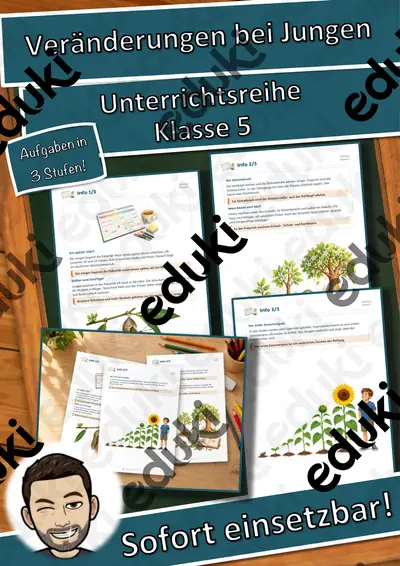
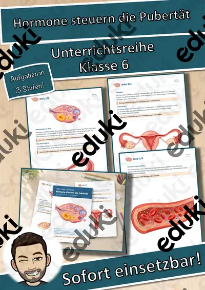
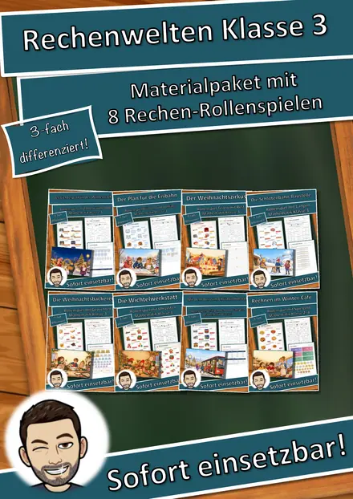
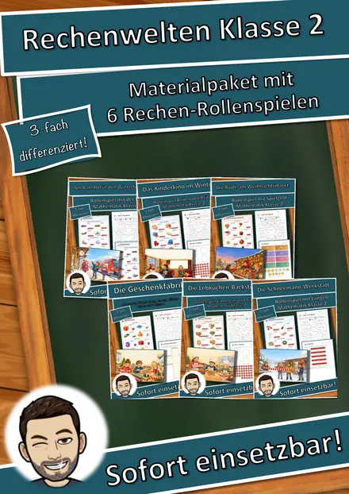
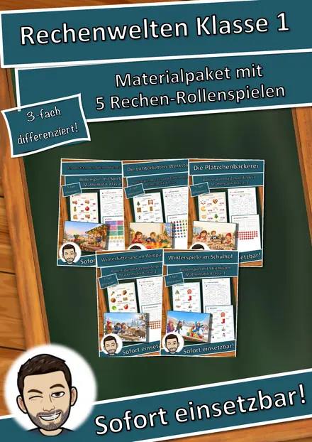

3D-Anhänger Fasching – Oktaeder, Diamant und Kugel zum Ausmalen und Basteln, 3-fach differenziert (Klasse 3/4)

3D-Anhänger Frühling – Oktaeder, Diamant und Kugel zum Ausmalen und Basteln, 3-fach differenziert (Klasse 3/4)

3D-Anhänger Herzen und Muttertag – Oktaeder, Diamant und Kugel zum Ausmalen und Basteln, 3-fach differenziert (Klasse 3/4)

Veränderungen bei Jungen – Unterrichtsreihe (Klasse 5)

Prädikate in verschiedenen Zeitformen – Merkposter (Klasse 6)

Hormone steuern die Pubertät – Unterrichtsreihe (Klasse 6)

Der Ostermarkt – Rollenspiel Gewichte mit Brüchen ½ ¼ ¾ kg, 3-fach differenziert (Klasse 4)

Ostereiersuche im Garten – Rollenspiel Lagewörter und Zählen bis 20, 3-fach differenziert (Klasse 1)

Der Faschingsumzug – Rollenspiel Zeitspannen und Fahrplan, Anfang und Ende berechnen, 3-fach differenziert (Klasse 3)

Der Faschingsladen – Rollenspiel Kombinatorik und Rechnen mit Geld, 3-fach differenziert (Klasse 2)

Das Prädikat erkennen – Präsentation mit Tafelbild (Klasse 5)

Das zweiteilige Prädikat – Merkposter (Klasse 5)

Prädikate in verschiedenen Personalformen – Merkposter (Klasse 5)

Lesespaziergang DaZ: Wir backen – Wortschatz mit Rätseln, 3-fach differenziert (Klasse 1–4)

Lesespaziergang DaZ: Spielen im Schnee – Wortschatz mit Rätseln, 3-fach differenziert (Klasse 1–4)

Lesespaziergang DaZ: Gemüse – Wortschatz mit Rätseln, 3-fach differenziert (Klasse 1–4)

Artikel im Rucksack: der, die, das mit Farbcode – Bastel-Rucksack, 24 Schulsachen, Hörübungen (DaZ, Klasse 1)

Lesespaziergang DaZ: Sankt Martin – Wortschatz mit Rätseln, 3-fach differenziert (Klasse 1–4)

3D-Anhänger Herbst – Oktaeder, Diamant und Kugel zum Ausmalen und Basteln, 3-fach differenziert (Klasse 3/4)

Unternehmensziele und Kennzahlen – mit Lernvideos, Übungsseite und Probe-Kurzarbeit (Berufsschule)

Rechtsformen der Unternehmung – mit Lernvideos, Übungsseite und Probe-Kurzarbeit (Berufsschule)

AGB und Verbraucherschutz – mit Lernvideos, Übungsseite und Probe-Kurzarbeit (Berufsschule)

Materialpaket Advent für die 5. Klasse: 3 Lesespurgeschichten mit Rätselaufgaben (Weihnachtsstern, Plätzchen backen, Handnähen)

Materialpaket Winter für die 9. Klasse: 5 Lesespurgeschichten mit Rätselaufgaben fächerübergreifend (Hungerwinter 1947, Permafrost, Christbaummarkt & mehr)

Materialpaket Winter und Advent für die 8. Klasse: 10 Lesespurgeschichten mit Rätselaufgaben fächerübergreifend (Polarlichter, Streusalz, Krippenbau & mehr)

Materialpaket Winter und Advent für die 7. Klasse: 10 Lesespurgeschichten mit Rätselaufgaben fächerübergreifend (Weihnachtsoratorium, Südpol, Eishockey & mehr)

Materialpaket Advent und Winter für die 6. Klasse: 7 Lesespurgeschichten mit Rätselaufgaben (Weihnachtsbasar, Saturnalien, Lichterfeste & mehr)

Materialpaket Rechenwelten im Winter für die 4. Klasse: 5 Mathe-Rollenspiele, 3-fach differenziert (Wintertombola, Schneeburg, Paketstation & mehr)

Materialpaket Rechenwelten im Winter für die 3. Klasse: 8 Mathe-Rollenspiele, 3-fach differenziert (Weihnachtsbäckerei, Lichterpark, Eisbahn & mehr)

Materialpaket Rechenwelten im Winter für die 2. Klasse: 6 Mathe-Rollenspiele, 3-fach differenziert (Weihnachtsmarkt, Kinderkino, Lebkuchen & mehr)

Materialpaket Rechenwelten im Winter für die 1. Klasse: 5 Mathe-Rollenspiele, 3-fach differenziert (Adventsmarkt, Plätzchenbäckerei, Wildpark & mehr)

Materialpaket Winter-Lesespaziergänge für Klasse 2–4: 5 Lesespaziergänge mit Rätseln, 3-fach differenziert (Winterwald, Spuren im Schnee, Plätzchen & mehr)

Materialpaket Winter und Advent für die 4. Klasse: 5 Lesespurgeschichten mit Rätselaufgaben (Weihnachtsmarkt, Fröbelsterne, Sternbilder & mehr)

Materialpaket Schnee, Eis und Wintersport für die 3. Klasse: 10 Lesespurgeschichten mit Rätselaufgaben (Rodelbahn, Eisstock, Schneelabor & mehr)

Materialpaket Natur im Winter für die 3. Klasse: 10 Lesespurgeschichten mit Rätselaufgaben (Wintertiere, Winterwald, Schneespuren & mehr)

Zahlungsverzug und Mahnverfahren – mit Lernvideos, Übungsseite und Probe-Kurzarbeit (Berufsschule)

Materialpaket Advent und Weihnachten für die 3. Klasse: 8 Lesespurgeschichten mit Rätselaufgaben (Barbarazweige, Lebkuchen, Santa Lucia, Sternsinger & mehr)

Mangelhafte Lieferung und Gewährleistung – mit Lernvideos, Übungsseite und Probe-Kurzarbeit (Berufsschule)

Vertragsarten im Überblick – mit Lernvideos, Übungsseite und Probe-Kurzarbeit (Berufsschule)

Rechts- und Geschäftsfähigkeit – mit Lernvideos, Übungsseite und Probe-Kurzarbeit (Berufsschule)

Inventur, Inventar und Bilanz – mit Lernvideos, Übungsseite und Probe-Kurzarbeit (Berufsschule)

Bemaßung nach Norm – Technisches Zeichnen Klasse 8/9 Mittelschule – Arbeitsheft mit Lösungen

Materialpaket Feste im Winter für die 2. Klasse: 6 Lesespurgeschichten mit Rätselaufgaben (Sankt Martin, Nikolaus, Advent, Weihnachten & Silvester)

Auf einen Blick! Mengen bis 10 blitzschnell erkennen – Miniheft Mathematik Klasse 1

Das Reisebüro: Winterreise in die Berge – Rollenspiel Maßstab, Kilometer und Meter, 3-fach differenziert (Klasse 4)

3D-Anhänger Winter – Oktaeder, Diamant und Kugel zum Ausmalen und Basteln, 3-fach differenziert (Klasse 3/4)

3D-Anhänger Advent – Oktaeder, Diamant und Kugel zum Ausmalen und Basteln, 3-fach differenziert (Klasse 3/4)

Lesekartei Advent – 32 Kinderfragen mit Antworten in 3 Stufen (Klasse 2–4)
Keine Materialien gefunden – versuch einen anderen Suchbegriff oder Filter.